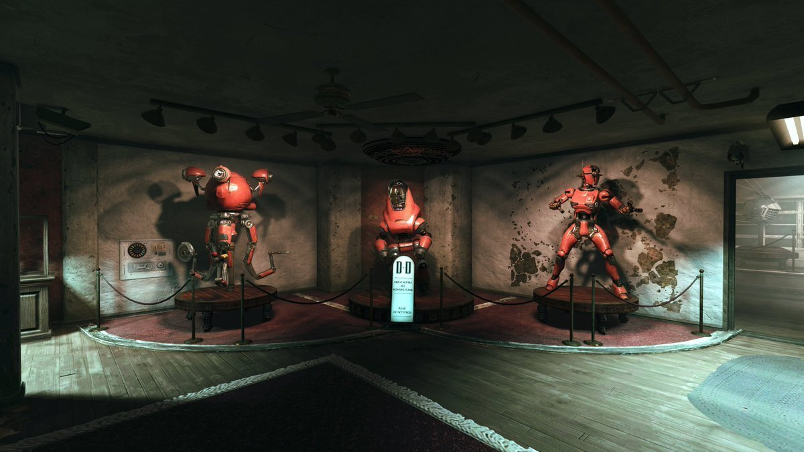
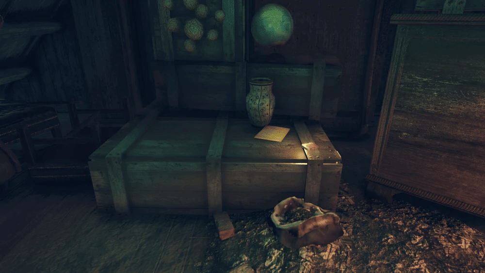

繝繝ｳ繧ｫ繝ｳ・・ム繝ｳ繧ｫ繝ｳ繝ｻ繝ｭ繝懊ユ繧｣繧ｯ繧ｹ
繝繝ｳ繧ｫ繝ｳ・・ム繝ｳ繧ｫ繝ｳ繝ｻ繝ｭ繝懊ユ繧｣繧ｯ繧ｹ縺ｯ縲：allout 76縺ｮ繧｢繝・・繝・・繝医係astelanders縲阪〒蟆主・縺輔ｌ縺溘・a href="summersville.html" class="auto-link">繧ｵ繝槭・繧ｺ繝薙Ν縺ｮ逕ｺ縺ｮ荳ｭ縺ｫ縺ゅｋ譛ｪ逋ｻ骭ｲ縺ｮ繝ｭ繧ｱ繝ｼ繧ｷ繝ｧ繝ｳ縺ｧ縺吶・/strong>
閭梧勹
譛邨よ姶莠我ｻ･蜑阪√ム繝ｳ繧ｫ繝ｳ・・ム繝ｳ繧ｫ繝ｳ繝ｻ繝ｭ繝懊ユ繧｣繧ｯ繧ｹ縺ｯ繝繝ｳ繧ｫ繝ｳ蜈・ｼ溘′謇譛峨☆繧九Ο繝懊ャ繝医す繝ｧ繝・・縺ｧ縺励◆縲・br>蜈・ｼ溘・荳莠ｺ縺御ｺ｡縺上↑縺｣縺溘→縺阪√ｂ縺・ｸ莠ｺ縺ｮ繧ｸ繧ｧ繝ｼ繝繧ｺ繝ｻ繝繝ｳ繧ｫ繝ｳ縺ｯ豁｣豌励ｒ螟ｱ縺・∪縺励◆縲・br>蠖ｼ縺ｯ閾ｪ蛻・・繝ｭ繝懊ャ繝医〒縺ゅｋ繧ｹ繧ｭ繝翫・繧呈隼騾縺励※莠｡縺榊・蠑溘′隕九∴繧九ｈ縺・↓縺励∵焚蟄励・縲・縲阪↓蟇ｾ縺励※蝓ｷ逹繧呈戟縺､繧医≧縺ｫ縺ｪ繧翫∝・蠑溘′縺ｾ縺逕溘″縺ｦ縺・ｋ縺ｨ菫｡縺倡ｶ壹￠縺ｾ縺励◆縲・br>辷・ｼｾ縺梧兜荳九＆繧後ｋ蜑阪√く繝｣繝ｳ繝励・繝槭け繝ｪ繝ｳ繝医ャ繧ｯ縺九ｉ莠､謠帷畑縺ｮ繝溘せ繧ｿ繝ｼ繝ｻ繝上Φ繝・ぅ縺ｮ繝ｭ繝懊ャ繝医ヵ繝ｬ繝ｼ繝縺・strong>Duncan & Duncan縺ｫ豕ｨ譁・＆繧後※縺・∪縺励◆縲・/p>
繝ｬ繧､繧｢繧ｦ繝・/h2>
繧ｭ繝ｼ繧ｫ繝ｼ繝峨′蠢・ｦ√↑豁｣髱｢邇・未繧貞・繧九→縲√す繝ｧ繝・・縺ｮ繝輔Ο繝ｳ繝医Ο繝薙・縺ｨ繝輔Ο繝ｳ繝医ョ繧ｹ繧ｯ縺後≠繧翫∪縺吶・br>蜿ｳ蛛ｴ縺ｫ縺ｯ縲√き繧ｦ繝ｳ繧ｿ繝ｼ縺ｮ陬上〒繧ｹ繧ｭ繝翫・縺梧ｵｮ驕翫＠縺ｦ縺・∪縺吶・/p>
蟾ｦ蛛ｴ縺ｫ縺ゅｋ骰ｵ縺ｮ縺九°縺｣縺滓演・医ヴ繝・く繝ｳ繧ｰ繝ｬ繝吶Ν0・峨・縲・a href="protectron.html" class="auto-link">繝励Ο繝・け繝医Ο繝ｳ繝ｻ繧ｷ繝ｧ繝ｼ繝ｫ繝ｼ繝縺ｸ縺ｨ邯壹＞縺ｦ縺・∪縺吶・br>螻慕､ｺ蜩√・繝ｬ繝ｼ繧ｶ繝ｼ繝ｻ繝医Μ繝・・繝ｯ繧､繝､繝ｼ縺ｫ繧医▲縺ｦ菫晁ｭｷ縺輔ｌ縺ｦ縺翫ｊ縲√％繧後↓隗ｦ繧後ｋ縺ｨ蝠・刀繧貞ｮ医ｋ縺溘ａ縺ｫ閾ｪ蜍募､ｩ莠輔ち繝ｬ繝・ヨ縺御ｽ懷虚縺励∪縺吶・/p>
繧ｹ繧ｭ繝翫・縺ｮ閭悟ｾ後↓縺ゅｋ髫取ｮｵ繧剃ｸ翫′繧九→繝溘せ繧ｿ繝ｼ繝ｻ繝上Φ繝・ぅ繝ｻ繧ｷ繝ｧ繝ｼ繝ｫ繝ｼ繝縺ｮ謇峨′縺ゅｊ縲√◎縺ｮ荳ｭ縺ｫ縺ｯ繧｢繧ｵ繝ｫ繝医Ο繝ｳ繝ｻ繧ｷ繝ｧ繝ｼ繝ｫ繝ｼ繝縺ｸ縺ｮ謇峨′縺ゅｊ縺ｾ縺吶・br>蛛ｴ髱｢縺ｮ繧ｪ繝輔ぅ繧ｹ縺ｯ縲√°縺､縺ｦ繝繝ｳ繧ｫ繝ｳ蜈・ｼ溘′菴ｿ逕ｨ縺励※縺・◆蝣ｴ謇縺ｧ縺吶・br>繧｢繧ｵ繝ｫ繝医Ο繝ｳ繝ｻ繧ｷ繝ｧ繝ｼ繝ｫ繝ｼ繝縺ｮ謇峨・蜿榊ｯｾ蛛ｴ縺ｫ縺ゅｋ髫取ｮｵ縺ｯ縲∝ｱ区ｹ陬城Κ螻九∈縺ｨ邯壹＞縺ｦ縺・∪縺吶・/p>
繧｢繧ｵ繝ｫ繝医Ο繝ｳ螻慕､ｺ縺ｮ陬上↓縺ゅｋ螂･縺ｮ驛ｨ螻九〒縺ｯ縲√け繧ｨ繧ｹ繝・Strength in Numbers 縺ｧ蜿励￠蜿悶▲縺溘ヨ繝ｩ繝・き繝ｼ繧偵√Ξ繝ｼ繧ｶ繝ｼ繝ｻ繝医Μ繝・・繝ｯ繧､繝､繝ｼ繧・､ｩ莠戊ｨｭ鄂ｮ蝙九・閾ｪ蜍輔Ξ繝ｼ繧ｶ繝ｼ繧ｿ繝ｬ繝・ヨ繧剃ｽ懷虚縺輔○繧九％縺ｨ縺ｪ縺・a href="assaultron.html" class="auto-link">繧｢繧ｵ繝ｫ繝医Ο繝ｳ縺ｮ菴薙↓螳牙・縺ｫ險ｭ鄂ｮ縺吶ｋ縺薙→縺後〒縺阪∪縺吶・/p>
豕ｨ逶ｮ縺ｮ謌ｦ蛻ｩ蜩・/h2>
繝繝ｳ繧ｫ繝ｳ豌上∈縺ｮ隰晉ｽｪ・壹い繝・ぅ繝・け縺ｮ髟ｷ縺・惠邂ｱ縺ｮ荳翫↓縺ゅｋ繝｡繝｢縺ｧ縺吶・/p>
繝繝ｳ繧ｫ繝ｳ豌上∈縺ｮ隰晉ｽｪ
繝繝ｳ繧ｫ繝ｳ讒倥∽ｾ九・縲悟哨隲悶阪↓髢｢荳弱＠縺溯・◆縺｡繧貞宍縺励￥蜿ｱ雋ｬ縺励※縺翫″縺ｾ縺励◆縲・br>縺ゅ↑縺溘・蜿悟ｭ舌↓螳帙※縺溷小蝟夂憾繧偵≠縺ｪ縺溘↓螻翫￠繧医≧縺ｨ縺励◆謇矩＆縺・↓縺､縺・※縲∵ｷｱ縺上♀隧ｫ縺ｳ逕ｳ縺嶺ｸ翫￡縺ｾ縺吶→縺ｨ繧ゅ↓縲√％縺ｮ豺ｷ荵ｱ繧偵＃逅・ｧ｣縺・◆縺縺代ｋ繧医≧蛻・↓鬘倥▲縺ｦ縺翫ｊ縺ｾ縺吶・br>谿句ｿｵ縺ｪ縺後ｉ縲√ｂ縺・ｸ莠ｺ縺ｮ繝繝ｳ繧ｫ繝ｳ豌上・萓晉┯縺ｨ縺励※陦梧婿繧偵￥繧峨∪縺励※縺・∪縺吶・br>蠖ｼ縺悟挨縺ｮ菴乗園縺ｫ菴上ｓ縺ｧ縺・↑縺・°縲∽ｻ贋ｸ蠎ｦ縺皮｢ｺ隱阪＞縺溘□縺代∪縺吶〒縺励ｇ縺・°・・br>縺帙ａ縺ｦ莉･荳九・菴乗園縺梧ｭ｣縺励＞縺九□縺代〒繧よ蕗縺医※縺上□縺輔＞・・br>繝√Ε繝ｼ繝ｫ繧ｹ繝医Φ縲√え繧ｩ繝・メ繧ｭ繝ｼ繝ｻ繧ｹ繝医Μ繝ｼ繝・88888縲・br>繝ｭ繝・け繧｢繧ｦ繝医′逋ｺ逕溘＠縺ｦ莉･譚･縲∝ｽｼ縺ｯ蜈ｱ蜷後・莉穂ｺ句ｴ繧る∩縺代※縺・ｋ繧医≧縺ｧ縺吶′縲∬ｿ題ｾｺ縺ｫ驟咲ｽｮ縺励◆閠・◆縺｡縺鯉ｼ医＃蟄倡衍縺ｮ騾壹ｊ・峨≠縺ｪ縺滓婿莠御ｺｺ繧貞玄蛻･縺吶ｋ縺ｮ縺ｫ闍ｦ蜉ｴ縺励※縺翫ｊ縺ｾ縺吶・br>蠖ｼ繧峨′蛻､蛻･縺ｧ縺阪ｋ繧医≧縲∽ｽ輔°蟆上＆縺ｪ繧ゅ・繧定ｺｫ縺ｫ縺､縺代※縺・◆縺縺上％縺ｨ縺ｯ蜿ｯ閭ｽ縺ｧ縺励ｇ縺・°・・
隘溘・繝斐Φ繧・√ず繝｣繧ｱ繝・ヨ縺ｮ繝昴こ繝・ヨ縺ｫ繝舌Λ繧貞ｷｮ縺吶↑縺ｩ縲・br>繧ｰ繝ｩ繝槭す繝ｼ・・い繝ｫ繧ｹ繧ｿ繝ｼ縺ｯ縲∵悽莉ｶ縺ｫ髢｢縺吶ｋ縺雁ｮ｢讒倥・蠢崎舌↓諢溯ｬ昴＞縺溘＠縺ｾ縺吶ゆｸ蛻ｻ繧よ掠縺上♀蜈・ｧ倥ｒ隕九▽縺大・縺励√す繝ｧ繝ｼ繝ｫ繝ｼ繝縺ｸ縺ｮ繧｢繧ｯ繧ｻ繧ｹ繧貞屓蠕ｩ縺ｧ縺阪ｋ縺薙→繧貞ｿ・ｈ繧企｡倥▲縺ｦ縺翫ｊ縺ｾ縺吶・br>
謨ｬ蜈ｷ縲・br>繧ｦ繧｣繝ｪ繧｢繝繝ｻ繝ｩ繧､繧｢繝ｳ繝ｻ繧ｰ繝ｩ繝槭す繝ｼ豕募ｭｦ蜊壼｣ｫ縲・/p>
陦碁俣繧定ｪｭ繧√√ず繧ｧ繝ｼ繝繧ｺ・・髫弱・繧ｪ繝輔ぅ繧ｹ縺ｫ縺ゅｋ繝・せ繧ｯ縺ｮ荳翫↓縺ゅｋ繝｡繝｢縺ｧ縺吶・/p>
陦碁俣繧定ｪｭ繧√√ず繧ｧ繝ｼ繝繧ｺ
繧ｳ繝ｼ繝峨ｒ繧｢繧ｵ繝ｫ繝医Ο繝ｳ繧ｷ繝ｧ繝ｼ繝ｫ繝ｼ繝縺ｫ螟画峩縺励◆繧薙□縲√ず繧ｧ繝ｼ繝繧ｺ縲・ 蜷帙・蛻･縺ｮ譁ｹ豕輔〒雋ｩ螢ｲ縺励↑縺代ｌ縺ｰ縺ｪ繧峨↑縺・・ 繧ｳ繝ｼ繝峨・繧ゅ≧貂｡縺励◆繧医・ 蜷帙↓縺ｯ蜒輔′蠢・ｦ√↑縺・ｓ縺縲・ 縺ｧ繧ょ菅縺檎､ｺ縺励◆繧医≧縺ｫ縲√≠縺ｮ繧ｴ繝ｭ繝・く縺溘■縺ｨ豁ｩ縺榊屓縺｣縺ｦ縺・ｋ
蜷帙・縲・ 陦碁俣繧定ｪｭ繧縺薙→縺ｯ豎ｺ縺励※縺ｪ縺・ｓ縺縲√ず繧ｧ繝ｼ繝繧ｺ縲らｧ√・
繧｢繧ｵ繝ｫ繝医Ο繝ｳ繧ｷ繝ｧ繝ｼ繝ｫ繝ｼ繝縺ｮ繧ｳ繝ｼ繝峨ｒ螟画峩縺励◆繧薙□縲√ず繧ｧ繝ｼ繝繧ｺ縲・ 蜷帙・蛻･縺ｮ譁ｹ豕輔〒雋ｩ螢ｲ縺励↑縺代ｌ縺ｰ縺ｪ繧峨↑縺・・ 繧ｳ繝ｼ繝峨・繧ゅ≧貂｡縺励◆繧医・ 蜷帙↓縺ｯ蜒輔′蠢・ｦ√↑縺・ｓ縺縲・ 縺ｧ繧ょ菅縺檎､ｺ縺励◆繧医≧縺ｫ縲√≠縺ｮ繧ｴ繝ｭ繝・く縺溘■縺ｨ豁ｩ縺榊屓縺｣縺ｦ縺・ｋ蜷帙・縲・ 陦碁俣繧定ｪｭ繧縺薙→縺ｯ豎ｺ縺励※縺ｪ縺・ｓ縺縲√ず繧ｧ繝ｼ繝繧ｺ縲らｧ√・
繧｢繧ｵ繝ｫ繝医Ο繝ｳ繧ｷ繝ｧ繝ｼ繝ｫ繝ｼ繝縺ｮ繧ｳ繝ｼ繝峨ｒ螟画峩縺励◆繧薙□縲√ず繧ｧ繝ｼ繝繧ｺ縲・ 蜷帙・蛻･縺ｮ譁ｹ豕輔〒雋ｩ螢ｲ縺励↑縺代ｌ縺ｰ縺ｪ繧峨↑縺・・ 繧ｳ繝ｼ繝峨・繧ゅ≧貂｡縺励◆繧医・ 蜷帙↓縺ｯ蜒輔′蠢・ｦ√↑縺・ｓ縺縲・ 縺ｧ繧ょ菅縺檎､ｺ縺励◆繧医≧縺ｫ縲√≠縺ｮ繧ｴ繝ｭ繝・く縺溘■縺ｨ豁ｩ縺榊屓縺｣縺ｦ縺・ｋ蜷帙・縲・ 陦碁俣繧定ｪｭ繧縺薙→縺ｯ豎ｺ縺励※縺ｪ縺・ｓ縺縲√ず繧ｧ繝ｼ繝繧ｺ縲らｧ√・
繧｢繧ｵ繝ｫ繝医Ο繝ｳ繧ｷ繝ｧ繝ｼ繝ｫ繝ｼ繝縺ｮ繧ｳ繝ｼ繝峨ｒ螟画峩縺励◆繧薙□縲√ず繧ｧ繝ｼ繝繧ｺ 8 蜷帙・蛻･縺ｮ譁ｹ豕輔〒雋ｩ螢ｲ縺吶ｋ蠢・ｦ√′縺ゅｊ縺ｾ縺・8 遘√・繧ゅ≧蜷帙↓繧ｳ繝ｼ繝峨ｒ貂｡縺励∪縺励◆ 8 蜷帙・蜒輔ｒ蠢・ｦ√→縺励∪縺帙ｓ 8 縺励°縺怜菅縺檎､ｺ縺励◆繧医≧縺ｫ縲√≠縺ｮ繧ｴ繝ｭ繝・く縺溘■縺ｨ豁ｩ縺榊屓縺｣縺ｦ 8 蜷帙・荳蠎ｦ繧・8 陦碁俣繧定ｪｭ縺ｾ縺ｪ縺・√ず繧ｧ繝ｼ繝繧ｺ 蜒輔・
繧｢繧ｵ繝ｫ繝医Ο繝ｳ 繧ｷ繝ｧ繝ｼ繝ｫ繝ｼ繝縺ｮ繧ｳ繝ｼ繝峨↓螟画峩縺励∪縺励◆ 繧ｸ繧ｧ繝ｼ繝繧ｺ 8 蜷帙・蛻･縺ｮ譁ｹ豕輔〒雋ｩ螢ｲ縺吶ｋ蠢・ｦ√′縺ゅｊ縺ｾ縺・8 遘√・繧ゅ≧蜷帙↓繧ｳ繝ｼ繝峨ｒ貂｡縺励∪縺励◆ 8 蜷帙・蜒輔ｒ蠢・ｦ√→縺励∪縺帙ｓ 8 縺励°縺怜菅縺檎､ｺ縺励◆繧医≧縺ｫ縲√≠縺ｮ繧ｴ繝ｭ繝・く縺溘■縺ｨ豁ｩ縺榊屓縺｣縺ｦ 8 蜷帙・荳蠎ｦ繧・8 陦碁俣繧定ｪｭ縺ｾ縺ｪ縺・√ず繧ｧ繝ｼ繝繧ｺ 蜒輔・
繧｢繧ｵ繝ｫ繝医Ο繝ｳ 繧ｷ繝ｧ繝ｼ繝ｫ繝ｼ繝縺ｮ繧ｳ繝ｼ繝峨↓螟画峩縺励∪縺励◆ 繧ｸ繧ｧ繝ｼ繝繧ｺ 8 蜷帙・蛻･縺ｮ譁ｹ豕輔〒雋ｩ螢ｲ縺吶ｋ蠢・ｦ√′縺ゅｊ縺ｾ縺・8 遘√・繧ゅ≧蜷帙↓繧ｳ繝ｼ繝峨ｒ貂｡縺励∪縺励◆ 8 蜷帙・蜒輔ｒ蠢・ｦ√→縺励∪縺帙ｓ 8 縺励°縺怜菅縺檎､ｺ縺励◆繧医≧縺ｫ縲√≠縺ｮ繧ｴ繝ｭ繝・く縺溘■縺ｨ豁ｩ縺榊屓縺｣縺ｦ 8 蜷帙・荳蠎ｦ繧・8 陦碁俣繧定ｪｭ縺ｾ縺ｪ縺・√ず繧ｧ繝ｼ繝繧ｺ 蜒輔・
繧｢繧ｵ繝ｫ繝医Ο繝ｳ 繧ｷ繝ｧ繝ｼ繝ｫ繝ｼ繝縺ｮ繧ｳ繝ｼ繝峨↓螟画峩縺励∪縺励◆ 繧ｸ繧ｧ繝ｼ繝繧ｺ 8 蜷帙・蛻･縺ｮ譁ｹ豕輔〒雋ｩ螢ｲ縺吶ｋ蠢・ｦ√′縺ゅｊ縺ｾ縺・8遘√・繧ゅ≧蜷帙↓繧ｳ繝ｼ繝峨ｒ貂｡縺励◆ 8 蜷帙↓縺ｯ蜒輔′蠢・ｦ√↑縺・8 縺縺悟菅縺檎､ｺ縺励◆繧医≧縺ｫ縲√≠縺ｮ謇九％縺ｮ謇九→豁ｩ縺榊屓縺｣縺ｦ縺・ｋ 8 蜷帙↓縺ｯ邨ｶ蟇ｾ縺ｫ 8 陦碁俣繧定ｪｭ繧√↑縺・ｓ縺縲√ず繧ｧ繝ｼ繝繧ｺ 遘√・
繧ｳ繝ｼ繝峨ｒ繧｢繧ｵ繝ｫ繝医Ο繝ｳ繧ｷ繝ｧ繝ｼ繝ｫ繝ｼ繝縺ｫ螟画峩縺励◆ 8 蜷帙・莉悶・譁ｹ豕輔〒雋ｩ螢ｲ縺励↑縺代ｌ縺ｰ縺ｪ繧峨↑縺・8 遘√・繧ゅ≧蜷帙↓繧ｳ繝ｼ繝峨ｒ貂｡縺励◆ 8 蜷帙↓縺ｯ蜒輔′蠢・ｦ√↑縺・8 縺縺悟菅縺檎､ｺ縺励◆繧医≧縺ｫ縲√≠縺ｮ謇九％縺ｮ謇九→豁ｩ縺榊屓縺｣縺ｦ縺・ｋ 8 蜷帙↓縺ｯ邨ｶ蟇ｾ縺ｫ 8 陦碁俣繧定ｪｭ繧√↑縺・ｓ縺縲√ず繧ｧ繝ｼ繝繧ｺ 遘√・
繧ｳ繝ｼ繝峨ｒ繧｢繧ｵ繝ｫ繝医Ο繝ｳ繧ｷ繝ｧ繝ｼ繝ｫ繝ｼ繝縺ｫ螟画峩縺励◆ 8 蜷帙・莉悶・譁ｹ豕輔〒雋ｩ螢ｲ縺励↑縺代ｌ縺ｰ縺ｪ繧峨↑縺・8 遘√・繧ゅ≧蜷帙↓繧ｳ繝ｼ繝峨ｒ貂｡縺励◆ 8 蜷帙↓縺ｯ蜒輔′蠢・ｦ√↑縺・8 縺縺悟菅縺檎､ｺ縺励◆繧医≧縺ｫ縲√≠縺ｮ謇九％縺ｮ謇九→豁ｩ縺榊屓縺｣縺ｦ縺・ｋ 8
蜷帙↓縺ｯ邨ｶ蟇ｾ縺ｫ 8 陦碁俣繧定ｪｭ繧√↑縺・ｓ縺縲√ず繧ｧ繝ｼ繝繧ｺ
莠､貂・/strong>・壹い繝・ぅ繝・け縺ｮ髟ｷ縺・惠邂ｱ縺ｮ荳翫・strong>繝繝ｳ繧ｫ繝ｳ豌上∈縺ｮ隰晉ｽｪ縺ｮ繝｡繝｢縺ｮ髫｣縺ｫ縺ゅｋ繝帙Ο繝・・繝・/a>縺ｧ縺吶・/p> 莠､貂・br>繧ｸ繧ｧ繝ｼ繝繧ｺ繝ｻ繝繝ｳ繧ｫ繝ｳ・壻ｻ雁屓縺ｰ縺九ｊ縺ｯ譛ｬ蠖薙↓繧・▲縺ｦ縺上ｌ縺溘↑縲√ず繝ｧ繝翫し繝ｳ縲・br>縺雁燕縺ｮ縺昴・謨ｰ蟄励∈縺ｮ蝓ｷ逹縺御ｿｺ縺溘■縺ｮ遐ｴ貊・ｒ諡帙￥繧薙□縺槭・br>縺薙・陦励〒縺ゅ・逡ｪ蜿ｷ縺後▽縺・◆螳ｶ縺ｯ縺薙％縺縺代□縺ｨ菴募ｺｦ繧りｨ縺｣縺ｦ縺・∪縺吶↑縲・br>縺縺御ｿｺ縺溘■縺ｮ蜚ｯ荳縺ｮ窶補穂ｽ輔□縺ｨ・・鬥ｬ鮖ｿ縺ｪ縺薙→縺ｯ窶補輔＞縺・□繧阪≧縲ゅせ繧ｭ繝翫・・・br> 繧｢繧ｵ繝ｫ繝医Ο繝ｳ繝ｻ繧ｷ繝ｧ繝ｼ繝ｫ繝ｼ繝繝ｻ繧｢繧ｯ繧ｻ繧ｹ繧ｫ繝ｼ繝・/strong>・夂音螳壹・莨夊ｩｱ驕ｸ謚櫁い縺ｧ隱ｬ蠕励↓謌仙粥縺吶ｋ縺ｨ繧ｹ繧ｭ繝翫・縺九ｉ貂｡縺輔ｌ縺ｾ縺吶・/p> 繧｢繧ｵ繝ｫ繝医Ο繝ｳ繝ｻ繧ｷ繝ｧ繝ｼ繝ｫ繝ｼ繝縺ｮ骰ｵ・・a href="assaultron.html" class="auto-link">繧｢繧ｵ繝ｫ繝医Ο繝ｳ
繧ｹ繧ｭ繝翫・・壹・縺・√ム繝ｳ繧ｫ繝ｳ讒假ｼ・br>
繧ｸ繧ｧ繝ｼ繝繧ｺ繝ｻ繝繝ｳ繧ｫ繝ｳ・壼ｼ溘′縲∝､墓婿縺ｮ繝・ぅ繝ｼ縺後↑縺・→隧ｱ縺怜粋縺・ｒ邯壹￠繧峨ｌ縺ｪ縺・→險縺｣縺ｦ縺・ｋ縲・br>鬧・・ｒ縺薙・繧句ｭ蝉ｾ帙・繧医≧縺ｫ縺ｪ縲・br>縺輔▲縺輔→謖√▲縺ｦ縺薙＞縲∫ｵゅｏ繧峨○繧九ｓ縺縲・
繧ｹ繧ｭ繝翫・・壹ム繝ｳ繧ｫ繝ｳ讒倥∝､ｱ遉ｼ繧呈価遏･縺ｧ逕ｳ縺嶺ｸ翫￡縺ｾ縺吶′縲∵ｭ｣遒ｺ縺ｫ縺ｯ縺ｩ縺薙∈縺昴・繝・ぅ繝ｼ繧偵♀謖√■縺吶ｌ縺ｰ繧医ｍ縺励＞縺ｧ縺励ｇ縺・°・・
繧ｸ繧ｧ繝ｼ繝繧ｺ繝ｻ繝繝ｳ繧ｫ繝ｳ・壼ｼ溘・縺ｨ縺薙ｍ縺ｫ豎ｺ縺ｾ縺｣縺ｦ縺・ｋ縺繧阪≧縲√％縺ｮ髢捺栢縺代・br>
繧ｹ繧ｭ繝翫・・壹♀蜈・ｧ倪ｦ窶ｦ蠅灘慍縺ｧ縺吶°・・
繧ｸ繧ｧ繝ｼ繝繧ｺ繝ｻ繝繝ｳ繧ｫ繝ｳ・壻ｸ菴謎ｽ輔ｒ險縺｣縺ｦ縺・ｋ繧薙□・・
荳九↓陦後▲縺ｦ繝・ぅ繝ｼ繧呈ｷｹ繧後√♀蜑阪・縺吶＄逶ｮ縺ｮ蜑阪・繝・せ繧ｯ縺ｫ蠎ｧ縺｣縺ｦ縺・ｋ蠖ｼ縺ｮ縺ｨ縺薙ｍ縺ｫ謖√▲縺ｦ縺薙＞縲・
繧ｹ繧ｭ繝翫・・壽率驍｣讒倪ｦ窶ｦ縺昴％縺ｫ縺ｯ隱ｰ繧ゅ＞縺ｾ縺帙ｓ縲・br>
繧ｸ繧ｧ繝ｼ繝繧ｺ繝ｻ繝繝ｳ繧ｫ繝ｳ・壹♀蜑坂ｦ窶ｦ縺ゅ＞縺､縺瑚ｦ九∴縺ｪ縺・・縺具ｼ・
繧ｹ繧ｭ繝翫・・壹・縺・∵率驍｣讒倥・
繧ｸ繧ｧ繝ｼ繝繧ｺ繝ｻ繝繝ｳ繧ｫ繝ｳ・壹・縺≫ｦ窶ｦ縺薙ｌ縺ｧ縺ｯ菴ｿ縺・黄縺ｫ縺ｪ繧峨ｓ縲・br>繧ｹ繧ｭ繝翫・縲・％蜈ｷ邂ｱ繧呈戟縺｣縺ｦ縺薙＞縲・br>譏弱ｉ縺九↓謨・囿縺励※縺・ｋ縺ｪ縲・
繧ｹ繧ｭ繝翫・・壺ｦ窶ｦ謇ｿ遏･縺・◆縺励∪縺励◆窶ｦ窶ｦ譌ｦ驍｣讒倥・/p>
繝溘せ繧ｿ繝ｼ繝ｻ繝上Φ繝・ぅ繝ｻ繧ｷ繝ｧ繝ｼ繝ｫ繝ｼ繝繝ｻ繧｢繧ｯ繧ｻ繧ｹ繧ｫ繝ｼ繝・/strong>・夂音螳壹・莨夊ｩｱ驕ｸ謚櫁い縺ｧ隱ｬ蠕励↓謌仙粥縺吶ｋ縺ｨ繧ｹ繧ｭ繝翫・縺九ｉ貂｡縺輔ｌ縺ｾ縺吶・/p> 繝溘せ繧ｿ繝ｼ繝ｻ繝上Φ繝・ぅ繝ｻ繧ｷ繝ｧ繝ｼ繝ｫ繝ｼ繝縺ｮ骰ｵ・・a href="assaultron.html" class="auto-link">繧｢繧ｵ繝ｫ繝医Ο繝ｳ繝ｻ繧ｷ繝ｧ繝ｼ繝ｫ繝ｼ繝縺ｮ蠎翫・逵滉ｸ九√せ繧ｭ繝翫・縺ｮ蟾ｦ蛛ｴ縺ｫ縺ゅｋ繝斐ャ繧ｭ繝ｳ繧ｰ繝ｬ繝吶Ν0縺ｾ縺溘・1縺ｮ驛ｨ螻九・荳ｭ縲・a href="mr-handy.html" class="auto-link">繝溘せ繧ｿ繝ｼ繝ｻ繝上Φ繝・ぅ縺ｮ邂ｱ縺ｮ蟾ｦ蛛ｴ縺ｫ縺ゅｋ驥大ｱ櫁｣ｽ縺ｮ譽壹・荳翫↓縺ゅｊ縺ｾ縺吶・/p> 繝励Ο繝・け繝医Ο繝ｳ繝ｻ繧ｷ繝ｧ繝ｼ繝ｫ繝ｼ繝繝ｻ繧｢繧ｯ繧ｻ繧ｹ繧ｫ繝ｼ繝・/strong>・夂音螳壹・莨夊ｩｱ驕ｸ謚櫁い縺ｧ隱ｬ蠕励↓謌仙粥縺吶ｋ縺ｨ繧ｹ繧ｭ繝翫・縺九ｉ貂｡縺輔ｌ縺ｾ縺吶・/p> 繝懊ヶ繝ｫ繝倥ャ繝・/strong>・壹い繝・ぅ繝・け縺ｮ螂･縺ｫ縺ゅｋ繧ｿ繝ｳ繧ｹ縺ｮ荳翫・a href="mr-handy.html" class="auto-link">繝溘せ繧ｿ繝ｼ繝ｻ繝上Φ繝・ぅ繝ｻ繧ｷ繝ｧ繝ｼ繝ｫ繝ｼ繝縺ｸ關ｽ荳九☆繧狗ｩｴ縺ｮ霑代￥縺ｫ縺ゅｊ縺ｾ縺吶・/p> 縺薙・繝ｭ繧ｱ繝ｼ繧ｷ繝ｧ繝ｳ縺ｯ縲√Γ繧､繝ｳ繧ｯ繧ｨ繧ｹ繝医〒縺ゅｋ Strength in Numbers 縺ｮ荳驛ｨ縺ｨ縺励※險ｪ繧後ｋ縺薙→縺ｫ縺ｪ繧翫∪縺吶・br>繧ｷ繝ｧ繝ｼ繝ｫ繝ｼ繝蜀・・繝ｭ繝懊ャ繝医◆縺｡縺ｯ縲√Ξ繝ｼ繧ｶ繝ｼ繝ｻ繝医Μ繝・・繝ｯ繧､繝､繝ｼ繧剃ｽ懷虚縺輔○縺ｪ縺・剞繧頑雰蟇ｾ縺励∪縺帙ｓ縲・br>繧ｹ繧ｭ繝翫・縺ｯ縲√・繝ｬ繧､繝､繝ｼ縺ｨ縺ｮ莨夊ｩｱ荳ｭ縺ｫ隱ｬ蠕励・驕ｸ謚櫁い繧呈署遉ｺ縺励√◎繧後↓繧医▲縺ｦ謌ｦ髣倥ｒ蝗樣∩縺励◆繧翫∝推繧ｷ繝ｧ繝ｼ繝ｫ繝ｼ繝縺ｮ繧｢繧ｯ繧ｻ繧ｹ繧ｫ繝ｼ繝峨ｒ蜈･謇九＠縺溘ｊ縺吶ｋ縺薙→縺悟庄閭ｽ縺ｧ縺吶・/p> 繧ｹ繧ｭ繝翫・縺ｯ縲√ム繝ｳ繧ｫ繝ｳ蜈・ｼ溘′蟄伜多縺縺｣縺滄・°繧牙ｽｼ繧峨↓莉輔∴縺ｦ縺・∪縺励◆縲ゅ＠縺九＠縲√≠繧区凾轤ｹ縺ｧ繧ｸ繧ｧ繝ｼ繝繧ｺ繝ｻ繝繝ｳ繧ｫ繝ｳ縺ｯ閠∬｡ｰ縺励∝・蠑溘・繧ｸ繝ｧ繝翫し繝ｳ縺後∪縺逕溘″縺ｦ縺・ｋ縺ｨ縺・≧螯・Φ縺ｫ蜿悶ｊ諞代°繧後ｋ繧医≧縺ｫ縺ｪ繧翫∪縺励◆縲・br>繧ｹ繧ｭ繝翫・縺後√ｂ縺・ｸ莠ｺ縺ｮ繝繝ｳ繧ｫ繝ｳ縺ｯ豁ｻ繧薙〒蠅灘慍縺ｫ蝓玖速縺輔ｌ縺ｦ縺・ｋ縺ｨ謖・遭縺励◆髫帙√ず繧ｧ繝ｼ繝繧ｺ縺ｯ繝ｭ繝懊ャ繝医′謨・囿縺励※縺・ｋ縺ｨ閠・∴縲∝ｽｼ繧剃ｿｮ逅・☆繧九◆繧√↓驕灘・繧呈戟縺｣縺ｦ縺薙＆縺帙∪縺励◆縲・br>繧ｸ繧ｧ繝ｼ繝繧ｺ繝ｻ繝繝ｳ繧ｫ繝ｳ縺御ｺ｡縺上↑縺｣縺溷ｾ後√せ繧ｭ繝翫・縺ｯ蠎励・邂｡逅・ｒ莉ｻ縺輔ｌ縺ｾ縺励◆縺後・a href="assaultron.html" class="auto-link">繧｢繧ｵ繝ｫ繝医Ο繝ｳ縺ｮ雉ｼ蜈･繧貞ｸ梧悍縺吶ｋ閠・・縲√い繝｡繝ｪ繧ｫ霆阪・繝｡繝ｳ繝舌・・育音縺ｫ蟆・ｻ阪・髫守ｴ壹ｒ謖√▽閠・ｼ峨〒縺ｪ縺・剞繧願ｿｽ縺・ｿ斐☆繧医≧蜻ｽ縺倥ｉ繧後※縺・∪縺励◆縲・br>譛邨よ姶莠牙ｾ後↓繧ｵ繝槭・繧ｺ繝薙Ν縺梧叛譽・＆繧後◆縺溘ａ縲√◎繧御ｻ･髯阪∝ｽｼ縺ｯ蠎励ｒ險ｪ繧後ｋ閠・ｒ蟷ｽ髴翫ｄ關ｽ縺｡逹縺阪・縺ｪ縺・ｭｻ髴翫〒縺ｯ縺ｪ縺・°縺ｨ逍代≧繧医≧縺ｫ縺ｪ縺｣縺ｦ縺・∪縺吶・/p> 蜀咲函縺ｮ譌･縺九ｉ1蟷ｴ蠕後・2103蟷ｴ縺ｫ縺ｪ縺｣縺ｦ繧ゅ√せ繧ｭ繝翫・縺ｯ萓晉┯縺ｨ縺励※蠎励ｒ驕句霧縺励※縺・∪縺吶′縲∽ｸｻ隕√↑蝗櫁ｷｯ繧定ｦ・≧蜑埼擇縺ｮ陬・抜縺悟､ｱ繧上ｌ縺ｦ縺・ｋ繧医≧縺ｫ隕九∴縺ｾ縺吶・strong>The Wayward 繧ｹ繧ｭ繝翫・縺ｮ蜿ｰ隧・br>螻・ｽ剰・ｼ喙繧ｭ繝｣繝ｳ繝励・繝槭け繝ｪ繝ｳ繝医ャ繧ｯ縺ｮ蜊呈･ｭ逕歉 驕九′縺・＞縺ｪ縲らｧ√・霆阪・閠・□縲ょｮ滄圀縲√く繝｣繝ｳ繝励・繝槭け繝ｪ繝ｳ繝医ャ繧ｯ縺ｮ蜊呈･ｭ逕溘□縲ゅく繝｣繝ｳ繝励・縺溘ａ縺ｫ繧｢繧ｵ繝ｫ繝医Ο繝ｳ繧貞屓蜿弱＠縺ｫ譚･縺溘・ 繝繝ｳ繧ｫ繝ｳ・・ム繝ｳ繧ｫ繝ｳ繝ｻ繝ｭ繝懊ユ繧｣繧ｯ繧ｹ縺ｯFallout 76縺ｫ縺ｮ縺ｿ逋ｻ蝣ｴ縺励√い繝・・繝・・繝医係astelanders縲阪〒蟆主・縺輔ｌ縺ｾ縺励◆縲・/p>蛯呵・/h2>
NPC
閭梧勹
繧ｹ繧ｭ繝翫・・壹≠縺ゅ∫ｴ譎ｴ繧峨＠縺・ゅ♀蠕・■縺励※縺翫ｊ縺ｾ縺励◆窶ｦ窶ｦ縲・br>縺溘□縲√％縺｡繧峨・險倬鹸縺ｧ縺ｯ繝槭け繝ｪ繝ｳ繝医ャ繧ｯ縺九ｉ縺ｮ萓晞ｼ縺ｯ繧｢繧ｵ繝ｫ繝医Ο繝ｳ縺ｧ縺ｯ縺ｪ縺上∽ｺ､謠帷畑縺ｮ繝上Φ繝・ぅ縺ｮ繝輔Ξ繝ｼ繝縺ｨ縺ｪ縺｣縺ｦ縺翫ｊ縺ｾ縺吶′縲・br>縺輔≠縲ゆｸ翫・髫弱〒蝗槫庶縺励※縺上□縺輔＞縲・/p>逋ｻ蝣ｴ菴懷刀
繝繝ｳ繧ｫ繝ｳ・・ム繝ｳ繧ｫ繝ｳ繝ｻ繝ｭ繝懊ユ繧｣繧ｯ繧ｹ縺ｯ縲：allout繧峨＠縺・ご蜉・→迢よｰ励′髱吶°縺ｫ縲√＠縺九＠魄ｮ辜医↓謠上°繧後◆邏譎ｴ繧峨＠縺・Ο繧ｱ繝ｼ繧ｷ繝ｧ繝ｳ縺ｧ縺吶・縲・br>
縲・縲阪∈縺ｮ迢よｰ・/b>: 繧ｸ繧ｧ繝ｼ繝繧ｺ縺悟濤逹縺励◆謨ｰ蟄励・8繧・∵ｭｻ繧薙□縺ｯ縺壹・蜈・ｼ溘′逶ｮ縺ｮ蜑阪↓蠎ｧ縺｣縺ｦ縺・ｋ縺ｨ菫｡縺倩ｾｼ繧蟋ｿ縺ｯ縲∵姶蜑阪・繧ｹ繝医Ξ繧ｹ縺悟ｽｼ繧偵＞縺九↓霑ｽ縺・ｩｰ繧√※縺・◆縺九ｒ迚ｩ隱槭▲縺ｦ縺・∪縺吶・a href="holotape.html" class="auto-link">繝帙Ο繝・・繝・/a>縺ｮ荳ｭ縺ｧ縲√Ο繝懊ャ繝医〒縺ゅｋ繧ｹ繧ｭ繝翫・縺ｮ譁ｹ縺後後◎縺薙↓縺ｯ隱ｰ繧ゅ＞縺ｾ縺帙ｓ縲阪→逵溷ｮ溘ｒ霑ｰ縺ｹ縺ｦ縺・ｋ繧ｷ繝ｼ繝ｳ縺ｮ貂ｩ蠎ｦ蟾ｮ縺後√だ繝・→縺吶ｋ繧医≧縺ｪ謔ｲ縺励＆繧呈ｼ泌・縺励※縺・∪縺吶・br>
鬮伜ｺｦ縺ｪ繧ｻ繧ｭ繝･繝ｪ繝・ぅ: 繝ｭ繝懊ャ繝医す繝ｧ繝・・繧峨＠縺上√す繝ｧ繝ｼ繝ｫ繝ｼ繝繧剃ｿ晁ｭｷ縺吶ｋ繝ｬ繝ｼ繧ｶ繝ｼ繝ｻ繝医Μ繝・・繝ｯ繧､繝､繝ｼ縺ｨ繧ｿ繝ｬ繝・ヨ縺ｮ莉墓寺縺代・縲∵爾邏｢閠・↓邱雁ｼｵ諢溘ｒ荳弱∴縺ｾ縺吶ら音縺ｫ繧｢繧ｵ繝ｫ繝医Ο繝ｳ縺ｮ繝懊ョ繧｣繧貞屓蜿弱☆繧矩圀縺ｮ縲∬｣城％繧帝壹ｋ縺ｨ縺・≧繧ｮ繝溘ャ繧ｯ繧る擇逋ｽ縺・〒縺吶・br>
豕慕噪縺ｪ霑ｽ蜿・/b>: 繝｡繝｢縺ｫ縺ゅｋ縲後メ繝｣繝ｼ繝ｫ繧ｹ繝医Φ縲√え繧ｩ繝・メ繧ｭ繝ｼ繝ｻ繧ｹ繝医Μ繝ｼ繝・88888縲阪→縺・≧菴乗園縺九ｉ繧ゅ√ず繧ｧ繝ｼ繝繧ｺ縺ｮ逡ｰ蟶ｸ縺ｪ縺薙□繧上ｊ縺檎函豢ｻ縺ｮ縺吶∋縺ｦ繧呈髪驟阪＠縺ｦ縺・◆縺薙→縺瑚ｪｭ縺ｿ蜿悶ｌ縺ｾ縺吶ょ曙蟄舌・蜈・ｼ溘ｒ蛹ｺ蛻･縺吶ｋ縺溘ａ縺ｫ縲後・繧ｱ繝・ヨ縺ｫ繝舌Λ繧偵阪→謠先｡医☆繧句ｼ∬ｭｷ螢ｫ縺ｮ闍ｦ蜉ｴ繧ゅ√←縺薙°貊醍ｨｽ縺ｧ縲√°縺､縺ｦ縺ｮ繧｢繝代Λ繝√い縺ｮ譌･蟶ｸ繧呈─縺倥＆縺帙∪縺吶・br>
繧ｵ繝槭・繧ｺ繝薙Ν縺ｮ髱吶°縺ｪ陦嶺ｸｦ縺ｿ縺ｮ荳ｭ縺ｧ縲√％縺ｮ蟒ｺ迚ｩ縺縺代′謌ｦ蜑阪・迢よｰ励ｒ縺昴・縺ｾ縺ｾ縺ｫ菫昴■邯壹￠縺ｦ縺・ｋ縺ｮ縺ｯ縲・撼蟶ｸ縺ｫ蜊ｰ雎｡逧・↑菴馴ｨ薙〒縺吶・br>
This article uses material from the 窶廢ndor窶・article on the Fallout wiki at Fandom and is licensed under the Creative Commons Attribution-Share Alike License.